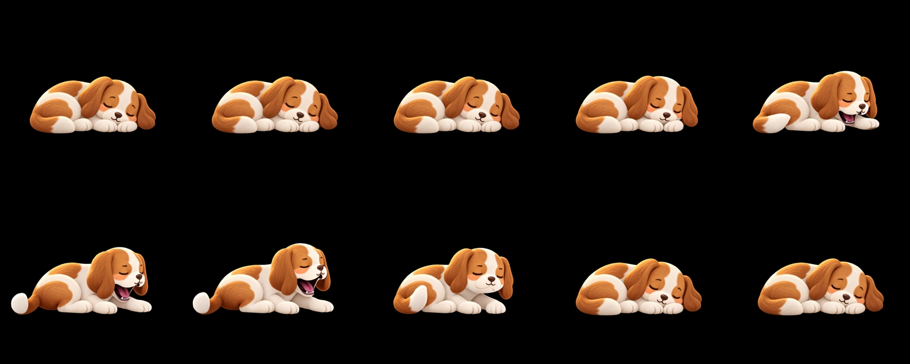
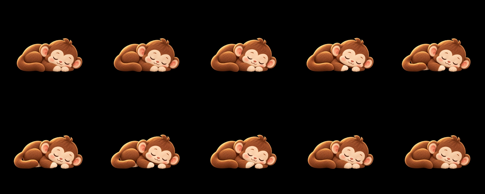
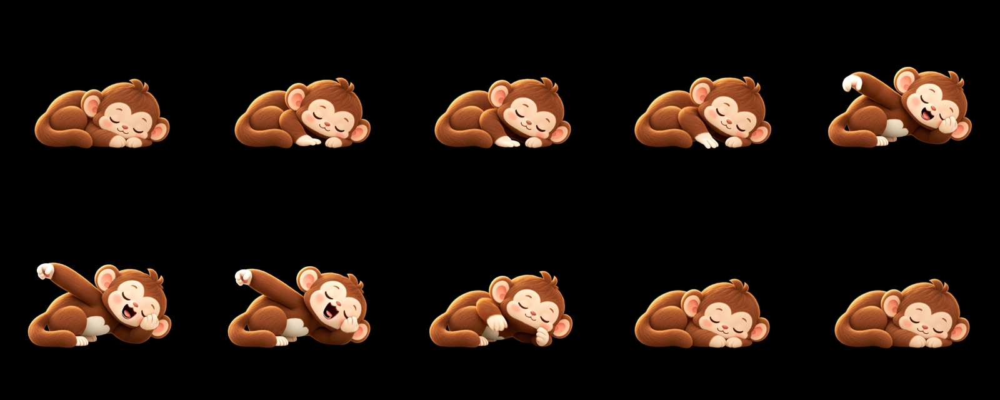
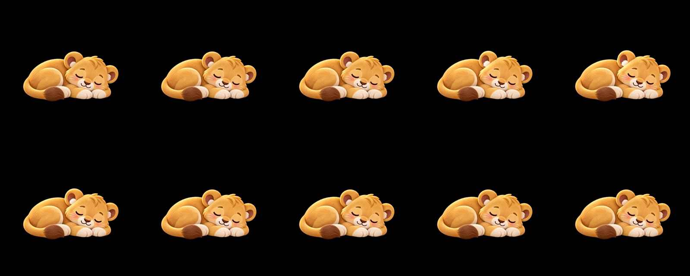
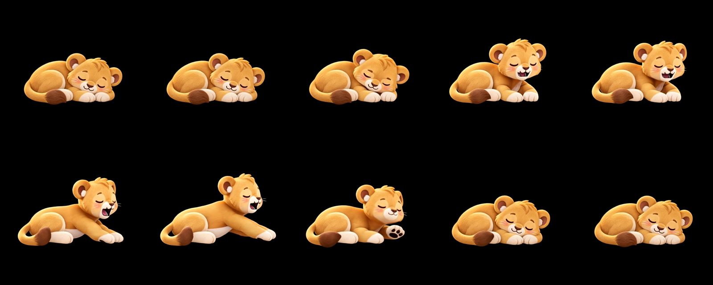

← Hareketli önizlemeÜç hayvan, altı hareket
Her şeritte soldan sağa, üstten alta 0–9. saniyeler. Kareler kaynak videolardan alınmıştır; ara poz çizimi veya ölçek efekti eklenmemiştir.
Köpek · Esneme

Maymun · Uyku

Maymun · Esneme

Aslan yavrusu · Uyku

Aslan yavrusu · Esneme

Değerlendirme ve sınırlar